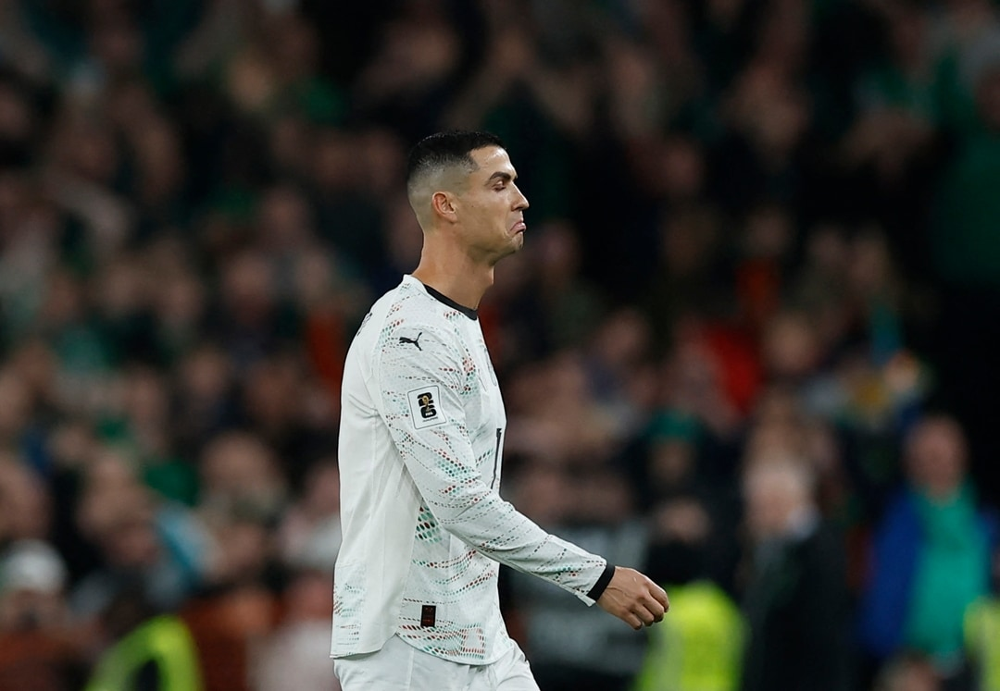

On-Pitch 'Dark Arts' Compilation
The dark-elbow tradition: On-pitch dark arts form an unavoidable chapter of Ronaldo's 'dark history'. His signature move is leading with the elbow when contesting or jockeying — in the April 2024 Saudi Super Cup he was sent off for elbowing Ali Al-Bulaihi in the chest/throat; in 2025 against Ireland he got his first Portugal red, again for elbowing a defender — never learning the lesson.
Stomping and stamping: Ronaldo has repeatedly been caught in bizarre stamps on opponents' heels: in a 2022 Chelsea match he was judged by VAR to have deliberately kicked out at Chilwell and Jones, narrowly escaping heavy punishment; back in the Madrid years against Málaga, Villarreal and others there were controversial stamps on ankles, often explained away as 'couldn't pull back in time' — never convincingly.
'The hair of God': At the 2018 World Cup Ronaldo scored against Morocco and replays suggested that, while flicking his hair in celebration, he appeared to grab the opponent's face. More famously, after his hat-trick in the 2014 World Cup play-off against Sweden, he gestured 'quiet' toward the stands to provoke — winding up beaten opponents; this 'rubbing it in' style runs through his career.
Exaggerated falls: From his early United years to the Madrid peak, Ronaldo long carried the labels 'diver' and 'Penaldo'. The most notorious flashpoints include the 2006 World Cup 'wink-gate' (urging the referee to send off club-mate Rooney), and countless theatrical falls in the box begging for penalties. ESPN pundit Ale Moreno once said straight out that some of his falls 'should never have been penalties'.
Time-wasting and pressure: Ronaldo is also a veteran of swarming the referee and time-wasting: going down injured when ahead, roaring at the referee after conceding, gesturing wildly when appealing fouls. These behaviours, classed by the English press as 'dark arts', don't always draw cards but seriously disrupt match flow — proof of a lack of sportsmanship.
Comparison and defence: Defenders argue Ronaldo's early years in England saw brutal fouls (in 2006 he was nearly leg-broken), so his toughness was forced on him, and his actual play outweighs the dark arts. Critics counter that Messi, Iniesta and others were also regularly fouled but rarely retaliated with elbows or stamps — character is character. Greatness is not the same as spotlessness.